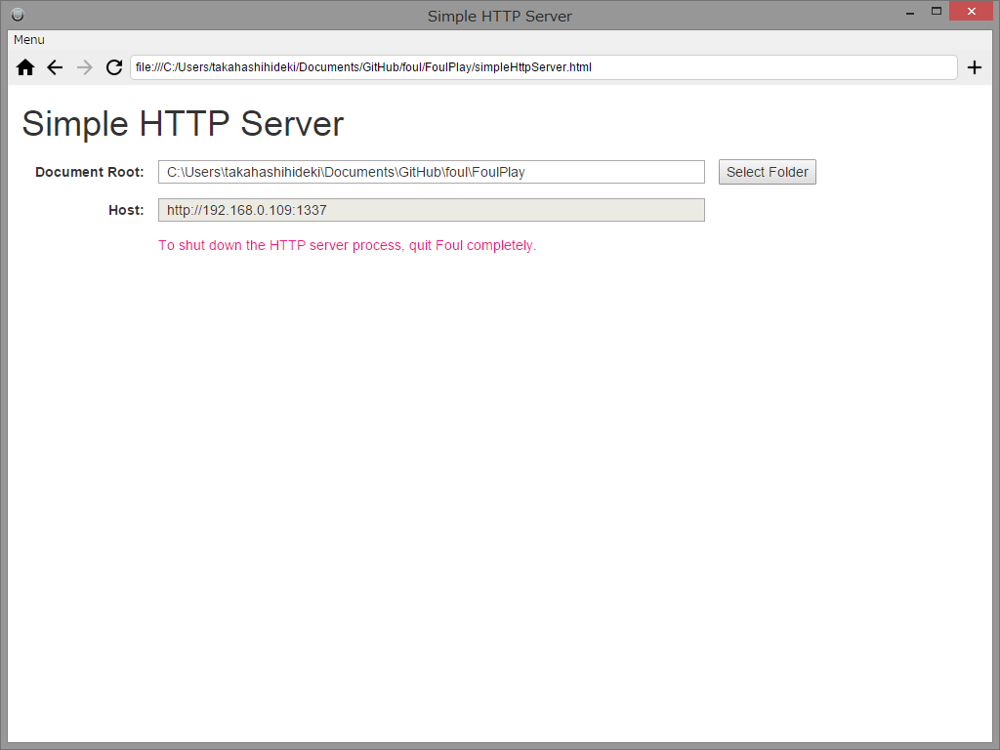

Simple Http Server は、簡易的な Local Network (LAN) HTTP サーバーとして動作するアプリです。
ローカルファイルシステムの任意のフォルダをドキュメントルートに指定することができます。
また、サーバーの起動中、いつでもドキュメントルートを別のフォルダに切り替えることができます。

下記の URL を Foul のアドレス欄に入力して表示します。表示されたら、アドレス欄の右にある「+」 ボタンをクリックして、ショートカットに登録します。
http://takahashihideki-git.github.io/FoulPlay/simpleHttpServer.html
その後、リロードするか、ホーム画面に追加されたアイコンをクリックして再表示すると、Local Network HTTPサーバーが起動します。
HTTPサーバーが起動すると、「host」欄に、IPアドレスとポート番号からなるホスト名が表示されます。
「Select Folder」ボタンをクリックすると、フォルダ選択ダイアログが開きます。
フォルダを選択すると、当該のフォルダ以下に配置されている各種ファイルに、LANに接続している PC やスマートフォンのブラウザからアクセスできるようになります。
たとえば、選択されたフォルダのサブフォルダ doc の sample.html には、次のURLでアクセスすることができます。
# e.g. 「host」欄に、「http://192.168.0.109:1337」と表示されている場合
http://192.168.0.109:1337/doc/sample.html
サーバーをシャットダウンするには、Foul を終了する必要があります。
Simple HTTP Server を表示したウィンドウで、他のページに遷移すると、HTTPサーバーは応答しなくなります。
また、そのあとで、再び Simple HTTP Server を表示すると、前に起動したHTTPサーバーとの間に、使用するシステムリソースの衝突を起こしてシステムエラーが発生します。
再び Simple HTTP Server を使用する場合は、いったん Foul を終了して、稼働している HTTP サーバーをシャットダウンする必要があります。
接続できない場合は、OS のファイアウォールの設定を見直してみてください。OSには、eletron というアプリケーション名で認識されている可能性があります。